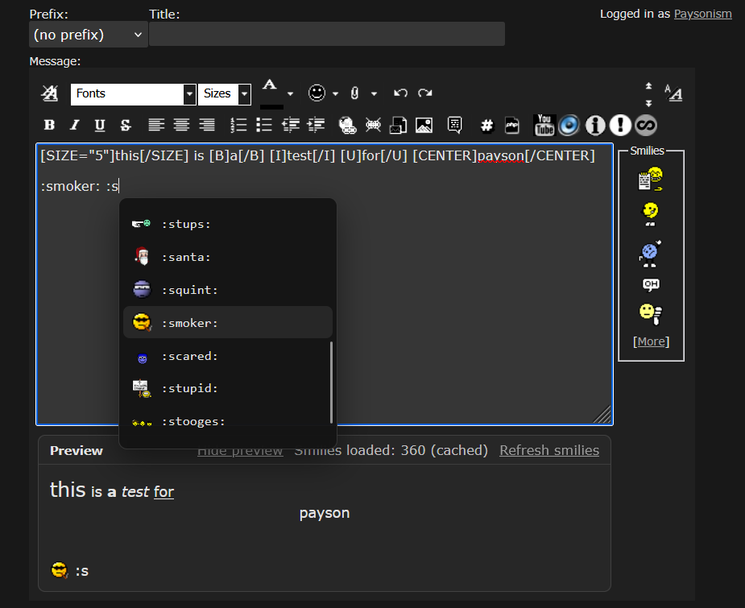
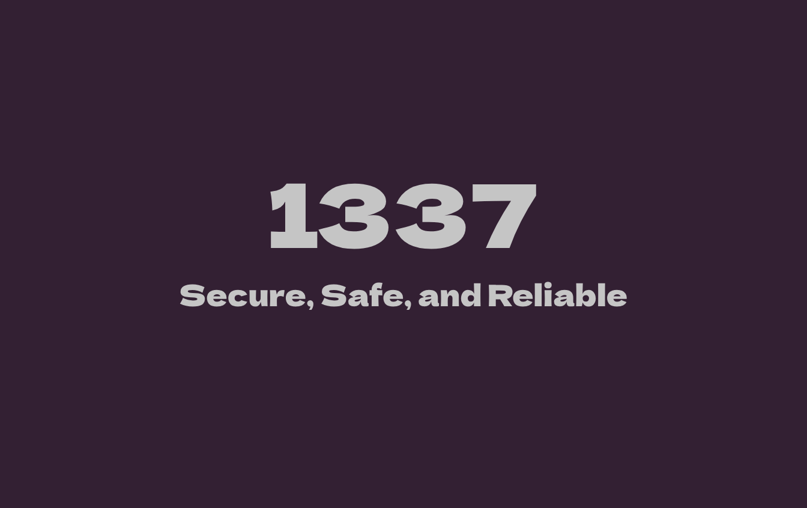

Free Fortnite External
Priority Support
Active Community
Likeminded Exploiters
Developer tooling
7 years building software
150+ total projects published on GitHub andGitLab
Primary Frameworks:
C, C++, and KMDF
Based in:
United States
Connecting...
GUESTBOOK - NO SIGNUP
Software Engineer | Systems Developer | 7 Years of Experience
I build low-level software, research Windows internals, and *attempt* turn complicated system behavior into practical tools. I work well with kernel drivers, memory internals, reverse engineering, desktop apps (C# & C++), browser tooling, and full-stack web projects. I am also learning virtualization and CPU architecture.
I have recently been interested in AI and integrating it in multiple areas, not only coding. I am actively researching and planning for lesson development, custom ai tools, and everything related to AI integration.
You can view all of my work across my GitHub and GitLab archives.
The original Unreal Engine SDK Interactive Viewer
Fast navigation for large Unreal Engine SDK dumps: fuzzy search, inheritance browsing, member filtering, offset lookup, and table or structure views.
[ KERNEL / REVERSAL ]
CORMEM VULNERABLE DRIVER REVERSAL
IOCTL mapping, memory primitives, address translation notes, and a Visual Studio user-mode verification harness.
[ DRIVER RESEARCH / FUZZING ]
IOCTLBF
Windows kernel-driver IOCTL fuzzer preserved for identifying exposed control codes in loaded drivers.

[ BROWSER TOOL / USER INTERFACE ]
A lightweight userscript for live BBCode, smilie, autocomplete, and syntax-highlighted post previews.

[ WEB APPLICATION / REAL-TIME ]
A rebuild of an earlier chat project with a dedicated client and separately maintained backend.
[ VISUAL STUDIO / SECURITY UTILITY ]
VCXPROJ TROJAN REMOVER
Removes malicious project entries, repairs damaged VCXPROJ files, and cleans generated backups.
[01] V2 PAYSON IOCTL DRIVER — Windows driver and user-mode communication archive.
[02] FORTNITE OFFSETS — Referenced Unreal Engine offsets archive.
[03] SATURN DRIVER — Earlier kernel-mode experiment with C/C++ communication example.
[04] FN-TOOLZ / FLB — Earlier utility and Python automation work.
Core languages: C, C++, C#, Python, JavaScript, TypeScript, HTML, CSS, and PHP.
Systems: Windows kernel development, driver communication, memory management, device interfaces, virtualization, binary formats, process internals, and low-level debugging.
Research: Reverse engineering, vulnerable-driver analysis, IOCTL surface mapping, static analysis, SDK inspection, and technical documentation.
Applications: Visual Studio desktop tools, browser userscripts, real-time web applications, developer utilities, data browsers, and automation.
Working style: I prefer direct, purpose-built systems with clear interfaces, measurable behavior, and minimal unnecessary abstraction.
I am interested in systems engineering, Windows internals, virtualization, reverse engineering, developer tools, technical research, and ambitious software products.
For source code, current work, or collaboration, visit GitLab. For the original public archive and community history, visit GitHub.
Profile: paysonism.wtf
GitLab: gitlab.com/paysonism
GitHub: github.com/paysonism
“Premature optimization is the root of all evil.” — Donald Knuth